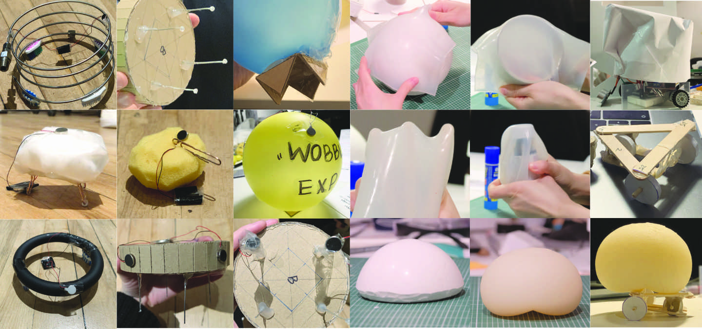
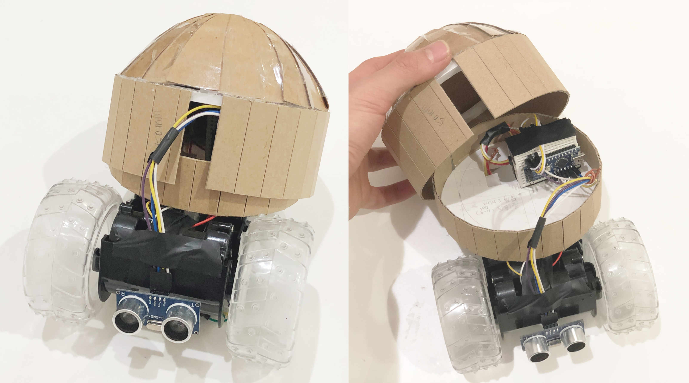
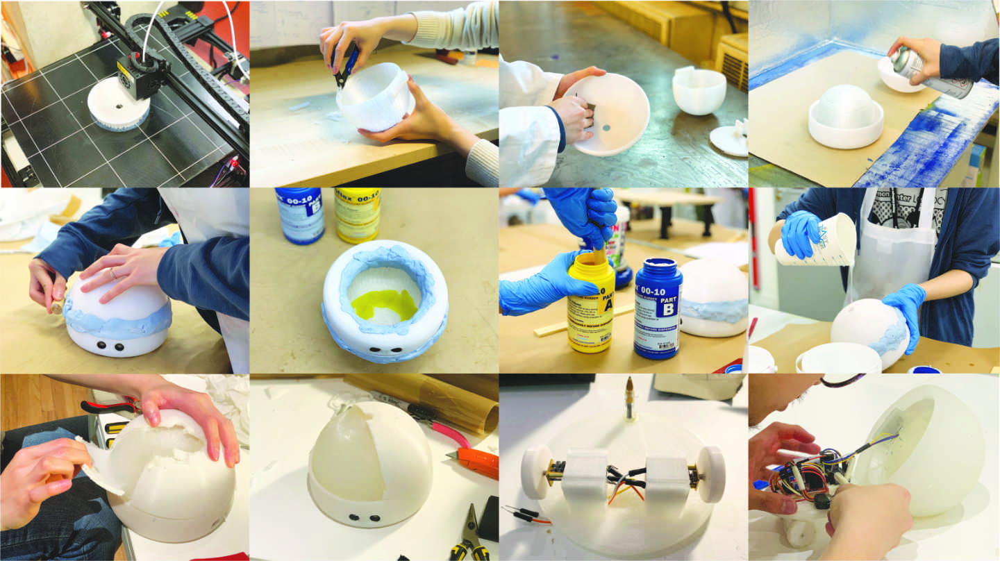

NIKU has a soft white body made of silicone to contain its electronic hardware. It resembles a juicy and meaty bun - hence the name NIKU (ニク: meat in Japanese). Through NIKU's playful interaction, we hope to fill the human psychological need of being wanted in this ever isolating society.
Mechatronics
Hardware:
• Dome-shaped silicone soft case • 3D printed dome-shaped hard case and base plate • 1 Arduino • 2 DC motors attached to 2 3D printed wheels seperately • 1 Ultrasonic sensor • 1 Motor H-bridge • 1 Ball pen tip
Arduino void loop () logics:
• Distance reading > 80cm: NIKU rotates to the right to search for targets around it. • Distance reading < 80cm but > 5cm: NIKU moves forward with one wheel driving forward at a time. • Distance reading < 5cm: NIKU charges forward and then reverse.
NIKU's form design and internal hardware engineering were revolved around three key behaviours that we narrowed down to - clumsy, clingy and annoying.
We made rapid prototypes to test out different sensors (IR, Ultrasonic, Thermal) and to experiment with a variety of moving mechanics (vibration, airflow, 2WD, 3WD, 4WD). We also concurrently tested out different orientations for the physical appearance of the robot.
 Rapid and efficient experiments on moving mechanics and forms
Prototype
Throughout experiment phase, we made lots of look-like prototypes to mimic specific movement/looks that we desired. Those prototypes were indeed insightful but not enough for us to visualise how different parts of NIKU would work together.
To efficiently test out form factors and key functionalities, we hacked a 3WD toy car and soldered our own parts and arduino board onto it. We also made cardboard casing to visualise internal hardware placement.
Our working prototype worked like a charm and assisted us in finalising design and 3D printing parameters.
 We teared down a toy 3WD car and soldered our own parts onto it for a rapid working prototype
3D Printing | Resin | Assembly
This stage was a ton of fun and learning! We made NIKU's silicone case with a custom 3D printed mold. With the help of workshop technicians, we were able to pull off NIKU's squishy look.
My teammate Kiwa did an amazing job at parametric modelling - all of our 3D printed parts fit nicely and hardware assembly was a breeze to complete.
 Silicone making with 3D printed mold and hardware assembly
Final Output
The live demo was a big success - everyone loved NIKU!

{kind=link}
{kind=link}
{kind=link}
{kind=link}
{kind=link}